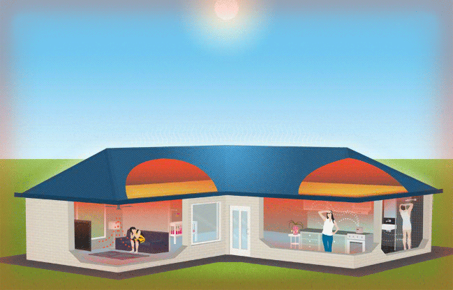
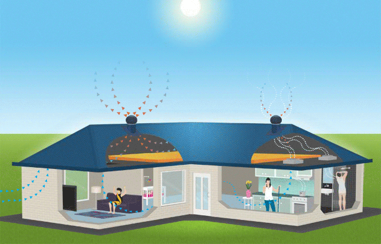
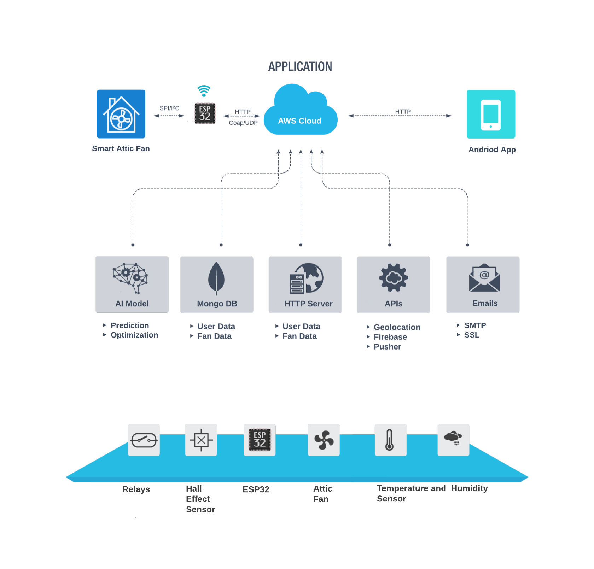
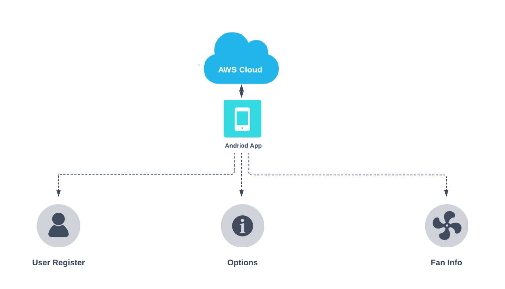
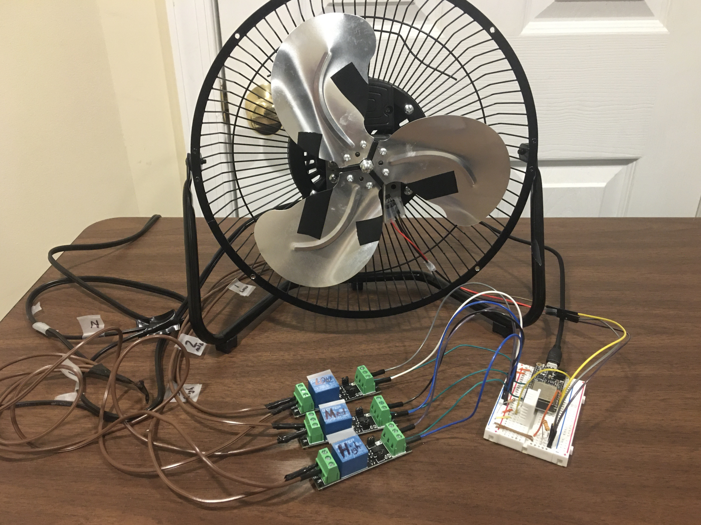

The Smart Attic Fan
A smart attic fan that optimizes ventilation and contains a system for fan fault detection.
Our product is built with an ESP32 chip that attaches to an attic fan to provide additional features. These features include an optimized fan speed switching for best air ventilation and a fault detection system. Any attic fan can reap the benefits of our product that connects to our AWS server, stores data in a NoSQL Mongo database table, communicates with a machine learning model, and displays all data to the user via a beautiful Android phone application. Users are emailed urgent information and sent push notifications about their attic fan.
Motivation

Attic fans are extremely important for reducing a house's
overall temperature (and in turn, air conditioning costs) and improving
a home's air flow. When your attic fan breaks, your wallet will feel it in your
air conditioning bill. The life span of an attic fan
is between 5 and 15 years. The Smart Attic Fan will help you improve your
energy savings by regulating the attic's fan speed and by notifying via
email and push notification as soon as your attic fan malfunctions.
Do you have to buy a new attic fan? NO! Smart Attic Fan attaches to your current
attic fan!
Attics are not uncommon in the United States. On the contrary, it is common that
attics are neglected as they are an uninhabitable area of a home,
but it is extremely important to keep an eye on the attic's ventilation and
insulation. The consequences of ignoring one’s attic could be quite damaging.
Two main reasons why ventilation is so important in a home’s attic:
During the summer, heat builds up in the attic during the day which only results
in additional energy costs to cool the entire house. Second, moisture produced
within the home may move into the attic which can condense and cause construction
materials to deteriorate if the moisture is not removed efficiently. An innocent
summer day can be 95 degrees outside, which will bake your attic up to
temperatures near 160 degrees fahrenheit! [1]
(Read B. R. Stewart's report here).


Unoccupied attics should be ventilated to reduce heat and moisture build up that contribute to mold growth and decay of wood rafters and ceiling joists [4]. In cold climates ventilation also helps to prevent ice-dams on the roof and leaks that they cause. In hot climates, ventilation reduces cooling loads [5]. Now, imagine that your attic fan breaks and you don't know--luckily for you, The Smart Attic Fan will notify you! Lastly, ventilation in an attic can always be better and our Smart Attic Fan aims to smartly cool this important area of your home.
As you can see, this product has a significant impact on a homeowner's attic
System
Architecture

Android Mobile App

The product is built with an ESP32 microcontroller, humidity/temperature sensors,
a hall-effect sensor (for determining fan's RPM), relays (for controlling fan speed), an
AWS server that accepts and responds to a variety of HTTP requests, and an Android Phone Application
as the UI. The AWS server communicates with the ESP32 as well as the Android app, acting much like
a middle man in the communication between the ESP32 and the phone application.
The ESP32 collects new data such as temperature, humidity, and the
fan’s RPMs. These data points are made into a vector (of features) which is
sent to the AWS server via HTTP every 10-20 minutes.
The server stores this data in a Mongo database table which is later used
to make graphics such as linear regression plots, temperature/humidity in the attic vs time,
and power consumed/RPM by the attic fan vs time.
Whenever new data is received by the AWS server from the ESP32, our AI model is
triggered to determine which speed the fan should run. The AWS server sends this
determination to the ESP32 in the payload of the HTTP response, which controls the fan’s
speed via the relays.
For the user interface, we used an android mobile application.
The app gives real-time data charts, attic climate information, local climate information,
options (such as turning the fan on/off), and push notifications for urgent updates about
their attic fan. Also, the user can create an account through the app to get email updates
about their fan.
Technical Components
Below details our technical merit at each level of our product:
Hardware
- ESP32 - used to communicate with AWS server

- Relays - connects the ESP32 to the fan motor's inductor to control speed

- Humidity and Temperature Sensor - sensors that collect humidity/temperature of immediate environment

- Hall-Effect Sensor - uses changes in magnetic field to determine rotational speed of fan

- Fan - modded device to work with our product to serve as proof-of-concept

Software
- ESP32 (src folder)
- WiFi Connection - to connect with the AWS server
- Amazon Web Services Server (aws_server folder)
- MongoDB - stores data in two tables (user's data and collected fan data)
- HTTP Server on Port 80 - handles multiple types of requests from the ESP32 and/or Android app, such as:
- Register a new user
- Toggle fan's emergency on/off
- Specific data charts (RPM, temperature, humidity, power consumption over time)
- Get climate data of local area
- CRUD operations on the MongoDB table
- Graph Generation - uses data stored in MongoDB to make pyplots
- AI, KNN model - determines fan speed by calling a KNN model that was trained using a training mongoDB table
- Middleman Communication - communicates directly with ESP32 and Android Application
- MongoDB Tables
- Data Collection Table (Fan) - stores all the user's fan data
- Training Table - houses (labeled) data that we collected for purposes of training AI models
- User Table - stores user's registration information such as name, email, and profile picture
- Options - provides user the ability to turn-off their attic fan
- AI & Data (model and aws_server folders)
- Prediction - uses a trained KNN classifier model to ascertain optimal fan speed. Data was collected using the ESP32 and sensors which are stored in a training MongoDB table with a calculated label. These data points were used to train a KNN model. This KNN model takes in the current attic climate information and returns a variable fan speed (currently between 0 and 3).
- Optimization - for proof of concept, the StateGraph algorithm computed an optimized pathfinder to lower the temperature. For each request, it calculates loss as weight, combining time and energy consumption. Then, using these weights, Dijkstra's algorithm finds the lowest cost node given certain start and target temperatures. The model determines the most optimal fan speed to lower attic temperature/humidity in the least amount of time and with the least power consumption. *Due to the complexity of the experimental environment, this feature is still a work in progress.
- Android Application (smart_attic_fan folder)
- Registration - handles functionality for user registration
- Information Display - shows local weather data, attic climate data, and fan details
- Data Display - shows python graphics that are downloaded from the AWS server
- Options - provides user the ability to turn-off their attic fan
Prototype
Smart Attic Fan

Android Phone App

Our prototype is novel. There currently does not exist a smart attic ventilator in the market as of this writing
Based on conversations with neighbors in our respective neighbors, we have identified this need that many of the million homeowners have
for maintaining their home.
Results
Fault Detection
The AWS server uses data it receives from the ESP32 to determine whether the fan is broken or working properly. If the fan is broken, the Android app reflects this update, and an email and push notification is sent to the user notifying them about their broken attic fan
The AWS server uses data it receives from the ESP32 to determine whether the fan is broken or working properly. If the fan is broken, the Android app reflects this update, and an email and push notification is sent to the user notifying them about their broken attic fan
Fan Speed Adjustment
Using a KNN model and relays, we determine and set the fan's speed optimally

Applying heat the the temperature sensor causes the fan to turn on
Data Visualizations on Android App
These graphs are generated by loading MongoDB data, using matplotlib, sending the .png over a HTTP stream from the AWS server to the Android app and using bit vectors to display the images. The was technically difficult to send the .png over a stream and to bitmap it in Java

i.e Temp Humidity Over Time
References
[1] ATTIC VENTILATION FOR HOMES, B. R. Stewart
[2] How Much Does It Cost to Repair an Attic Fan?, FixR
[3] Attic Insulation Can Save You Money Year-Round, Phelps Heating & Air
[4] BSD-102: Understanding Attic Ventilation
[5] 2015 International Building Code Illustrated Handbook
[6] Lstiburek, J. (2006). Understanding attic ventilation. Ashrae Journal, 48(4), 36.
[7] Zhao, D., Aili, A., Yin, X., Tan, G., & Yang, R. (2019). Roof-integrated radiative air-cooling system to achieve cooler attic for building energy saving. Energy and Buildings, 203, 109453.
[8] Haese, P. M., & Teubner, M. D. (2002). Heat exchange in an attic space. International Journal of Heat and Mass Transfer, 45(25), 4925-4936.


Contact
Yin Zhang: yz4053@columbia.edu
Mark Ozdemir: mo2804@columbia.edu
James Mastran: jam2454@columbia.edu
Columbia University Department of Electrical Engineering
Instructor: Professsor Xiaofan (Fred) Jiang